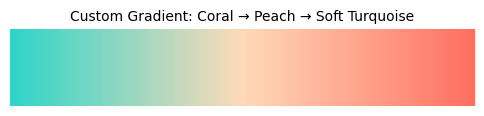
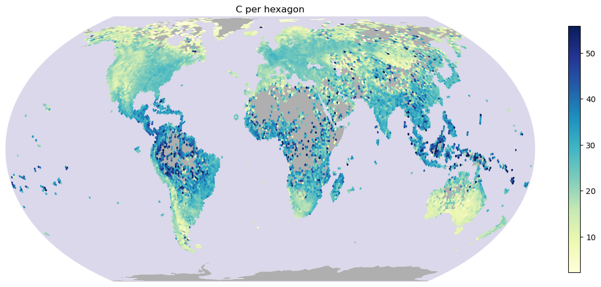
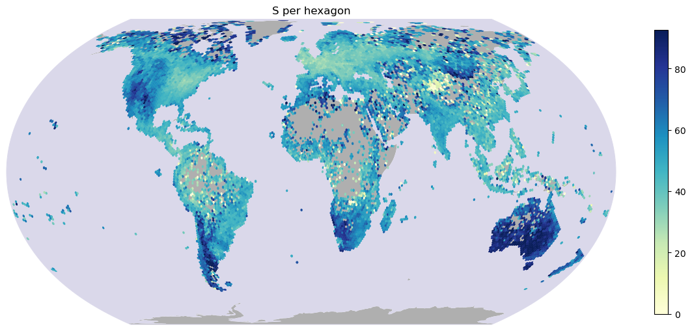
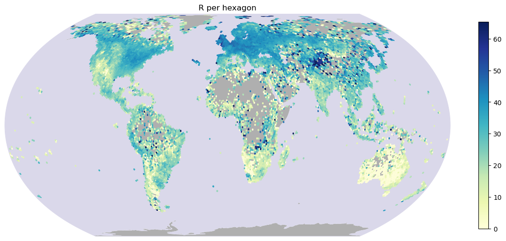
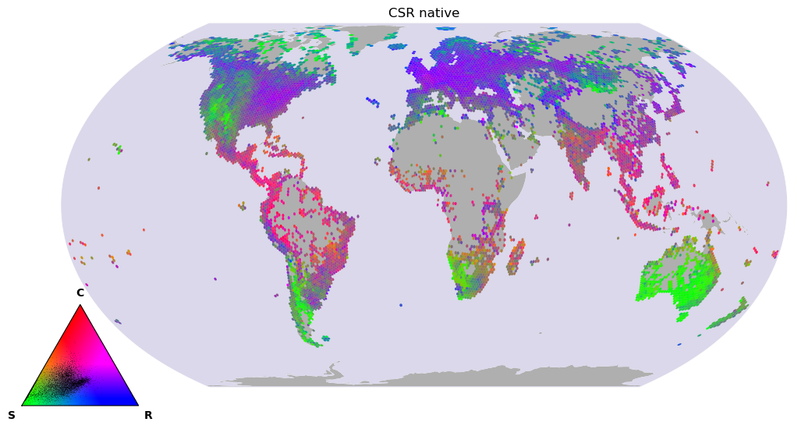
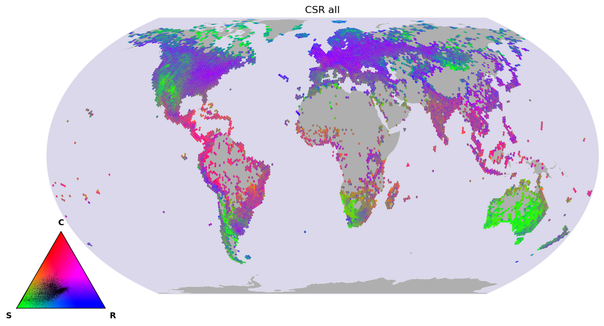

Plot global gradients of main principal components
Contents
Plot global gradients of main principal components#
!pwd
/net/home/swolf/Func_Neo_Phytes
# set working directory
import os
os.chdir("/net/home/swolf/Func_Neo_Phytes/")
Load summary stats at hexagon level#
import pandas as pd
import matplotlib.pyplot as plt
import h3pandas
summary_data = pd.read_csv("/net/scratch/swolf/GBIF/gbif_res3_try6_CS_wcvp_summary_stats_inkl_pca_mean_log10_notrim_misstree_group_with_CSR.csv")
summary_data.head()
| h3_res3 | group | PC1 | PC2 | PC3 | PC4 | PC5 | count | count_sp | mean_perc_na | ... | X.X95 | X.X138 | X.X1080 | X.X78 | X.X4 | X.X47 | LA_resolved | C | S | R | |
|---|---|---|---|---|---|---|---|---|---|---|---|---|---|---|---|---|---|---|---|---|---|
| 0 | 83001afffffffff | all | -10.334354 | 1.322861 | -1.725583 | 1.041462 | 2.158910 | 10 | 4 | 5.68 | ... | 85.452 | 2.183 | 3.140 | -0.547 | 0.333000 | 0.152 | 1.449 | 0.911566 | 0.000000 | 99.088434 |
| 1 | 83001afffffffff | native | -10.334354 | 1.322861 | -1.725583 | 1.041462 | 2.158910 | 10 | 4 | 5.68 | ... | 85.452 | 2.183 | 3.140 | -0.547 | 0.333000 | 0.152 | 1.449 | 0.911566 | 0.000000 | 99.088434 |
| 2 | 83001cfffffffff | all | -10.005360 | -0.238006 | 0.249138 | 2.913739 | 0.975752 | 1 | 1 | 16.22 | ... | 92.099 | 2.545 | 3.121 | -0.563 | 0.316611 | 0.175 | 1.518 | 2.943733 | 19.720529 | 77.335738 |
| 3 | 83001cfffffffff | native | -9.988809 | -0.301432 | 0.282222 | 2.913640 | 0.966630 | 1 | 1 | 16.22 | ... | 92.099 | 2.545 | 3.121 | -0.563 | 0.329122 | 0.175 | 1.518 | 2.943733 | 19.720529 | 77.335738 |
| 4 | 83001efffffffff | all | -10.690103 | -0.871359 | -0.945247 | -0.268565 | 1.311954 | 4 | 3 | 3.38 | ... | 88.269 | 2.311 | 3.671 | -1.933 | 0.409000 | 0.211 | 1.391 | 0.000000 | 47.807063 | 52.192937 |
5 rows × 51 columns
Map hexagons#
Create GeoDataFrame and Clean Geometries#
This code block converts H3 hexagon indices to polygons, wraps longitudes to the range [-180, 180], and creates a GeoDataFrame. Invalid geometries and polygons spanning more than 180° longitude are removed to ensure clean and accurate spatial data for further analysis.
final_df = summary_data.copy()
import geopandas as gpd
import h3
from shapely.geometry import Polygon
from shapely.ops import transform
import matplotlib.pyplot as plt
import cartopy.crs as ccrs
import cartopy.feature as cfeature
# Function to convert H3 cell to polygon
def h3_to_polygon(h3_index):
boundary = h3.h3_to_geo_boundary(h3_index, geo_json=True)
return Polygon(boundary)
# Function to wrap longitudes to [-180, 180]
def wrap_geometry(geom):
def wrap_coords(x, y):
x_wrapped = ((x + 180) % 360) - 180
return x_wrapped, y
return transform(lambda x, y: wrap_coords(x, y), geom)
# Build geometry column
final_df["geometry"] = final_df["h3_res3"].apply(lambda x: wrap_geometry(h3_to_polygon(x)))
# Create GeoDataFrame
gdf = gpd.GeoDataFrame(final_df, geometry="geometry", crs="EPSG:4326")
# Fix column names
gdf.columns = gdf.columns.str.replace('.', '_')
# 💥 Remove invalid geometries and those spanning too much longitude
gdf = gdf[gdf.geometry.is_valid] # remove invalid
gdf = gdf[gdf.bounds.maxx - gdf.bounds.minx < 180] # remove polygons >180° wide
/tmp/ipykernel_95540/3219989185.py:28: FutureWarning: The default value of regex will change from True to False in a future version. In addition, single character regular expressions will *not* be treated as literal strings when regex=True.
gdf.columns = gdf.columns.str.replace('.', '_')
Plot world map#
import matplotlib.pyplot as plt
import matplotlib.colors as mcolors
import numpy as np
# Define your custom colors
colors = [ "#2ed5c9", "#FFDAB9", "#FF6F61"]
# Create the colormap
native_non_cmap = mcolors.LinearSegmentedColormap.from_list("custom_gradient", colors)
# OPTIONAL: Visualize it with a gradient bar
gradient = np.linspace(0, 1, 256).reshape(1, -1)
plt.figure(figsize=(6, 1))
plt.imshow(gradient, aspect='auto', cmap=native_non_cmap)
plt.axis("off")
plt.title("Custom Gradient: Coral → Peach → Soft Turquoise", fontsize=10)
plt.show()

import matplotlib.pyplot as plt
import matplotlib.colors as mcolors
# Define your colors
low_color = "#2F86AC" # like native_color
mid_color = "white"
high_color = "#b02f2c" # like all_color
# Create a custom diverging colormap
div_cmap = mcolors.LinearSegmentedColormap.from_list(
"custom_diverging",
[low_color, mid_color, high_color]
)
def plot_maps(gdf, pattern, output_suffix="meanbased_trim01_GBIF_wcvp_CS_log10_notrim_LCweighted"):
import os
import numpy as np
import matplotlib.pyplot as plt
import cartopy.crs as ccrs
import cartopy.feature as cfeature
os.makedirs("Results/Figures", exist_ok=True)
# Loop over columns matching the pattern
for column in [col for col in gdf.columns if col.startswith(pattern)]:
# -------------------------
# Set colour scale
# -------------------------
if "percent_change" in column:
vmin, vmax = -80, 80
cmap = div_cmap
elif "rank_biserial_r" in column:
vmin, vmax = -0.7, 0.7
cmap = div_cmap
elif "perc_naturalized" in column:
vmin, vmax = 0, 100
cmap = "YlGnBu"
elif "conifer_percentage" in column:
vmin, vmax = 0, 20
cmap = "YlGnBu"
elif "annual_percentage" in column:
vmin, vmax = 0, 40
cmap = "YlGnBu_r"
elif "PC1_diff" in column:
vmin = np.nanpercentile(gdf[column], 5)
vmax = np.nanpercentile(gdf[column], 95)
limit = max(abs(vmin), abs(vmax))
vmin, vmax = -limit, limit
cmap = div_cmap
elif "PC2_diff" in column:
vmin = np.nanpercentile(gdf["PC1_diff"], 5)
vmax = np.nanpercentile(gdf["PC1_diff"], 95)
limit = max(abs(vmin), abs(vmax))
vmin, vmax = -limit, limit
cmap = div_cmap
elif "PC3_diff" in column:
vmin = np.nanpercentile(gdf["PC1_diff"], 5)
vmax = np.nanpercentile(gdf["PC1_diff"], 95)
limit = max(abs(vmin), abs(vmax))
vmin, vmax = -limit, limit
cmap = div_cmap
elif "PC4_diff" in column:
vmin = np.nanpercentile(gdf["PC1_diff"], 5)
vmax = np.nanpercentile(gdf["PC1_diff"], 95)
limit = max(abs(vmin), abs(vmax))
vmin, vmax = -limit, limit
cmap = div_cmap
elif "PC5_diff" in column:
vmin = np.nanpercentile(gdf["PC1_diff"], 5)
vmax = np.nanpercentile(gdf["PC1_diff"], 95)
limit = max(abs(vmin), abs(vmax))
vmin, vmax = -limit, limit
cmap = div_cmap
elif any(x in column for x in ["urban_diff", "nat_diff", "crop_diff"]):
vmin, vmax = -1, 1
cmap = div_cmap
else:
vmin = np.nanpercentile(gdf[column], 1)
vmax = np.nanpercentile(gdf[column], 99)
cmap = "YlGnBu"
# -------------------------
# Create map
# -------------------------
fig, ax = plt.subplots(
figsize=(12, 10),
subplot_kw={"projection": ccrs.EqualEarth()}
)
ax.set_global()
ax.add_feature(
cfeature.LAND,
facecolor="#afafafff",
edgecolor="none"
)
ax.add_feature(
cfeature.OCEAN,
facecolor="#dad8eaff",
edgecolor="none"
)
ax._autoscaleXon = True
ax._autoscaleYon = True
# Plot hexagons
gdf.plot(
column=column,
cmap=cmap,
vmin=vmin,
vmax=vmax,
legend=True,
ax=ax,
transform=ccrs.PlateCarree(),
linewidth=0.001,
legend_kwds={"shrink": 0.45}
)
ax.set_title(
f"{column} per hexagon",
fontsize=12
)
for spine in ax.spines.values():
spine.set_edgecolor("#dad8eaff")
spine.set_linewidth(0.7)
plt.tight_layout()
# -------------------------
# Save
# -------------------------
output_path = (
f"Results/Figures/"
f"{column}_{output_suffix}.png"
)
plt.savefig(
output_path,
dpi=500,
bbox_inches="tight"
)
print(output_path)
plt.show()
plt.close()
# Plot PC axes 1-5 for all and native
plot_maps(gdf, "C")
plot_maps(gdf, "S")
plot_maps(gdf, "R")
/net/home/swolf/.conda/envs/traitmaps/lib/python3.8/site-packages/cartopy/crs.py:245: ShapelyDeprecationWarning: __len__ for multi-part geometries is deprecated and will be removed in Shapely 2.0. Check the length of the `geoms` property instead to get the number of parts of a multi-part geometry.
if len(multi_line_string) > 1:
/net/home/swolf/.conda/envs/traitmaps/lib/python3.8/site-packages/cartopy/crs.py:297: ShapelyDeprecationWarning: Iteration over multi-part geometries is deprecated and will be removed in Shapely 2.0. Use the `geoms` property to access the constituent parts of a multi-part geometry.
for line in multi_line_string:
/net/home/swolf/.conda/envs/traitmaps/lib/python3.8/site-packages/cartopy/crs.py:364: ShapelyDeprecationWarning: __len__ for multi-part geometries is deprecated and will be removed in Shapely 2.0. Check the length of the `geoms` property instead to get the number of parts of a multi-part geometry.
if len(p_mline) > 0:
/net/home/swolf/.conda/envs/traitmaps/lib/python3.8/site-packages/cartopy/crs.py:256: ShapelyDeprecationWarning: __len__ for multi-part geometries is deprecated and will be removed in Shapely 2.0. Check the length of the `geoms` property instead to get the number of parts of a multi-part geometry.
line_strings = list(multi_line_string)
/net/home/swolf/.conda/envs/traitmaps/lib/python3.8/site-packages/cartopy/crs.py:256: ShapelyDeprecationWarning: Iteration over multi-part geometries is deprecated and will be removed in Shapely 2.0. Use the `geoms` property to access the constituent parts of a multi-part geometry.
line_strings = list(multi_line_string)
/net/home/swolf/.conda/envs/traitmaps/lib/python3.8/site-packages/cartopy/crs.py:402: ShapelyDeprecationWarning: Iteration over multi-part geometries is deprecated and will be removed in Shapely 2.0. Use the `geoms` property to access the constituent parts of a multi-part geometry.
line_strings.extend(multi_line_string)
/net/home/swolf/.conda/envs/traitmaps/lib/python3.8/site-packages/cartopy/crs.py:402: ShapelyDeprecationWarning: __len__ for multi-part geometries is deprecated and will be removed in Shapely 2.0. Check the length of the `geoms` property instead to get the number of parts of a multi-part geometry.
line_strings.extend(multi_line_string)
Results/Figures/C_meanbased_trim01_GBIF_wcvp_CS_log10_notrim_LCweighted.png

/net/home/swolf/.conda/envs/traitmaps/lib/python3.8/site-packages/cartopy/crs.py:245: ShapelyDeprecationWarning: __len__ for multi-part geometries is deprecated and will be removed in Shapely 2.0. Check the length of the `geoms` property instead to get the number of parts of a multi-part geometry.
if len(multi_line_string) > 1:
/net/home/swolf/.conda/envs/traitmaps/lib/python3.8/site-packages/cartopy/crs.py:297: ShapelyDeprecationWarning: Iteration over multi-part geometries is deprecated and will be removed in Shapely 2.0. Use the `geoms` property to access the constituent parts of a multi-part geometry.
for line in multi_line_string:
/net/home/swolf/.conda/envs/traitmaps/lib/python3.8/site-packages/cartopy/crs.py:364: ShapelyDeprecationWarning: __len__ for multi-part geometries is deprecated and will be removed in Shapely 2.0. Check the length of the `geoms` property instead to get the number of parts of a multi-part geometry.
if len(p_mline) > 0:
Results/Figures/S_meanbased_trim01_GBIF_wcvp_CS_log10_notrim_LCweighted.png

/net/home/swolf/.conda/envs/traitmaps/lib/python3.8/site-packages/cartopy/crs.py:245: ShapelyDeprecationWarning: __len__ for multi-part geometries is deprecated and will be removed in Shapely 2.0. Check the length of the `geoms` property instead to get the number of parts of a multi-part geometry.
if len(multi_line_string) > 1:
/net/home/swolf/.conda/envs/traitmaps/lib/python3.8/site-packages/cartopy/crs.py:297: ShapelyDeprecationWarning: Iteration over multi-part geometries is deprecated and will be removed in Shapely 2.0. Use the `geoms` property to access the constituent parts of a multi-part geometry.
for line in multi_line_string:
/net/home/swolf/.conda/envs/traitmaps/lib/python3.8/site-packages/cartopy/crs.py:364: ShapelyDeprecationWarning: __len__ for multi-part geometries is deprecated and will be removed in Shapely 2.0. Check the length of the `geoms` property instead to get the number of parts of a multi-part geometry.
if len(p_mline) > 0:
Results/Figures/R_meanbased_trim01_GBIF_wcvp_CS_log10_notrim_LCweighted.png

RGB map#
import pandas as pd
import geopandas as gpd
import h3
from shapely.geometry import Polygon
# ── 1. Long → wide: one row per hexagon ──────────────────────────────────────
wide = summary_data.pivot(index="h3_res3", columns="group", values=["C", "S", "R", "count_sp"])
wide.columns = [f"{var}_{grp}" for var, grp in wide.columns] # → C_all, C_native, ...
wide = wide.reset_index()
# ── 2. Hexagon polygons ──────────────────────────────────────────────────────
def hex_polygon(cell):
if hasattr(h3, "cell_to_boundary"): # h3 v4
return Polygon([(lng, lat) for lat, lng in h3.cell_to_boundary(cell)])
return Polygon(h3.h3_to_geo_boundary(cell, geo_json=True)) # h3 v3: already (lng, lat)
gdf = gpd.GeoDataFrame(wide, geometry=wide["h3_res3"].apply(hex_polygon), crs="EPSG:4326")
# Drop hexagons crossing the antimeridian (they'd smear across the whole map)
gdf = gdf[(gdf.geometry.bounds["maxx"] - gdf.geometry.bounds["minx"]) < 180]
# ── 3. Drop species-poor hexagons ────────────────────────────────────────────
gdf = gdf[(gdf["count_sp_native"] >= 10) & (gdf["count_sp_all"] >= 10)]
# ── 4. Plot (functions from before) ──────────────────────────────────────────
cols_native = ("C_native", "S_native", "R_native")
cols_all = ("C_all", "S_all", "R_all")
lims = stretch_limits(gdf, [cols_native, cols_all])
plot_csr_rgb(gdf, cols_native, lims, "CSR native", "rgb_stretched")
plot_csr_rgb(gdf, cols_all, lims, "CSR all", "rgb_stretched")
/net/home/swolf/.conda/envs/traitmaps/lib/python3.8/site-packages/cartopy/crs.py:245: ShapelyDeprecationWarning: __len__ for multi-part geometries is deprecated and will be removed in Shapely 2.0. Check the length of the `geoms` property instead to get the number of parts of a multi-part geometry.
if len(multi_line_string) > 1:
/net/home/swolf/.conda/envs/traitmaps/lib/python3.8/site-packages/cartopy/crs.py:297: ShapelyDeprecationWarning: Iteration over multi-part geometries is deprecated and will be removed in Shapely 2.0. Use the `geoms` property to access the constituent parts of a multi-part geometry.
for line in multi_line_string:
/net/home/swolf/.conda/envs/traitmaps/lib/python3.8/site-packages/cartopy/crs.py:364: ShapelyDeprecationWarning: __len__ for multi-part geometries is deprecated and will be removed in Shapely 2.0. Check the length of the `geoms` property instead to get the number of parts of a multi-part geometry.
if len(p_mline) > 0:
/net/home/swolf/.conda/envs/traitmaps/lib/python3.8/site-packages/cartopy/crs.py:245: ShapelyDeprecationWarning: __len__ for multi-part geometries is deprecated and will be removed in Shapely 2.0. Check the length of the `geoms` property instead to get the number of parts of a multi-part geometry.
if len(multi_line_string) > 1:
/net/home/swolf/.conda/envs/traitmaps/lib/python3.8/site-packages/cartopy/crs.py:297: ShapelyDeprecationWarning: Iteration over multi-part geometries is deprecated and will be removed in Shapely 2.0. Use the `geoms` property to access the constituent parts of a multi-part geometry.
for line in multi_line_string:
/net/home/swolf/.conda/envs/traitmaps/lib/python3.8/site-packages/cartopy/crs.py:364: ShapelyDeprecationWarning: __len__ for multi-part geometries is deprecated and will be removed in Shapely 2.0. Check the length of the `geoms` property instead to get the number of parts of a multi-part geometry.
if len(p_mline) > 0:
Results/Figures/CSR_native_rgb_stretched.png

/net/home/swolf/.conda/envs/traitmaps/lib/python3.8/site-packages/cartopy/crs.py:245: ShapelyDeprecationWarning: __len__ for multi-part geometries is deprecated and will be removed in Shapely 2.0. Check the length of the `geoms` property instead to get the number of parts of a multi-part geometry.
if len(multi_line_string) > 1:
/net/home/swolf/.conda/envs/traitmaps/lib/python3.8/site-packages/cartopy/crs.py:297: ShapelyDeprecationWarning: Iteration over multi-part geometries is deprecated and will be removed in Shapely 2.0. Use the `geoms` property to access the constituent parts of a multi-part geometry.
for line in multi_line_string:
/net/home/swolf/.conda/envs/traitmaps/lib/python3.8/site-packages/cartopy/crs.py:364: ShapelyDeprecationWarning: __len__ for multi-part geometries is deprecated and will be removed in Shapely 2.0. Check the length of the `geoms` property instead to get the number of parts of a multi-part geometry.
if len(p_mline) > 0:
/net/home/swolf/.conda/envs/traitmaps/lib/python3.8/site-packages/cartopy/crs.py:245: ShapelyDeprecationWarning: __len__ for multi-part geometries is deprecated and will be removed in Shapely 2.0. Check the length of the `geoms` property instead to get the number of parts of a multi-part geometry.
if len(multi_line_string) > 1:
/net/home/swolf/.conda/envs/traitmaps/lib/python3.8/site-packages/cartopy/crs.py:297: ShapelyDeprecationWarning: Iteration over multi-part geometries is deprecated and will be removed in Shapely 2.0. Use the `geoms` property to access the constituent parts of a multi-part geometry.
for line in multi_line_string:
/net/home/swolf/.conda/envs/traitmaps/lib/python3.8/site-packages/cartopy/crs.py:364: ShapelyDeprecationWarning: __len__ for multi-part geometries is deprecated and will be removed in Shapely 2.0. Check the length of the `geoms` property instead to get the number of parts of a multi-part geometry.
if len(p_mline) > 0:
Results/Figures/CSR_all_rgb_stretched.png

import os
import numpy as np
import matplotlib.pyplot as plt
import cartopy.crs as ccrs
import cartopy.feature as cfeature
def csr_to_rgb(C, S, R, lims=None):
"""C, S, R in % → N×3 RGB (C=red, S=green, R=blue).
lims=(lo, hi): per-channel stretch, arrays of length 3 in 0–1 units."""
rgb = np.column_stack([C, S, R]).astype(float) / 100
if lims is not None:
lo, hi = lims
rgb = (rgb - lo) / (hi - lo)
return np.clip(rgb, 0, 1)
def stretch_limits(gdf, col_sets, q=(2, 98)):
"""Shared stretch across several maps (e.g. native + all) so colours are comparable."""
vals = np.vstack([gdf[list(cols)].to_numpy(float) for cols in col_sets]) / 100
return (np.nanpercentile(vals, q[0], axis=0),
np.nanpercentile(vals, q[1], axis=0))
def ternary_legend(ax, lims, data=None, res=300):
"""Coloured CSR triangle (C top, S bottom-left, R bottom-right) + data points."""
h = np.sqrt(3) / 2
X, Y = np.meshgrid(np.linspace(0, 1, res), np.linspace(0, h, res))
c = Y / h
r = X - 0.5 * c
s = 1 - c - r
inside = (c >= 0) & (r >= 0) & (s >= 0)
rgb = csr_to_rgb(c.ravel() * 100, s.ravel() * 100, r.ravel() * 100, lims).reshape(res, res, 3)
ax.imshow(np.dstack([rgb, inside.astype(float)]), origin="lower", extent=(0, 1, 0, h))
if data is not None: # where the hexagons actually fall
d = data[~np.isnan(data).any(axis=1)] / 100
ax.scatter(0.5 * d[:, 0] + d[:, 2], h * d[:, 0],
s=0.4, c="k", alpha=0.15, linewidths=0, rasterized=True)
ax.plot([0, 1, 0.5, 0], [0, 0, h, 0], c="k", lw=0.8)
ax.text(0.5, h + 0.05, "C", ha="center", va="bottom", fontweight="bold")
ax.text(-0.05, -0.04, "S", ha="right", va="top", fontweight="bold")
ax.text(1.05, -0.04, "R", ha="left", va="top", fontweight="bold")
ax.set_xlim(-0.12, 1.12); ax.set_ylim(-0.12, h + 0.15)
ax.set_aspect("equal"); ax.axis("off")
def plot_csr_rgb(gdf, cols, lims, title, output_suffix):
os.makedirs("Results/Figures", exist_ok=True)
g = gdf.dropna(subset=list(cols))
rgb = csr_to_rgb(*(g[c].to_numpy() for c in cols), lims)
fig, ax = plt.subplots(figsize=(12, 10), subplot_kw={"projection": ccrs.EqualEarth()})
ax.set_global()
ax._autoscaleXon = True
ax._autoscaleYon = True
ax.add_feature(cfeature.LAND, facecolor="#afafafff", edgecolor="none")
ax.add_feature(cfeature.OCEAN, facecolor="#dad8eaff", edgecolor="none")
g.plot(color=rgb, ax=ax, transform=ccrs.PlateCarree(), linewidth=0)
for spine in ax.spines.values():
spine.set_edgecolor("#dad8eaff"); spine.set_linewidth(0.7)
ax.set_title(title, fontsize=12)
leg = fig.add_axes([0.06, 0.22, 0.17, 0.17]) # adjust position as needed
ternary_legend(leg, lims, data=g[list(cols)].to_numpy(float))
out = f"Results/Figures/{title.replace(' ', '_')}_{output_suffix}.png"
plt.savefig(out, dpi=500, bbox_inches="tight")
print(out)
plt.show()
plt.close()
# ── Usage: adjust column names to yours ──────────────────────────────────────
cols_native = ("C_native", "S_native", "R_native")
cols_all = ("C_all", "S_all", "R_all")
lims = stretch_limits(gdf, [cols_native, cols_all]) # one shared stretch
plot_csr_rgb(gdf, cols_native, lims, "CSR native", "rgb_stretched")
plot_csr_rgb(gdf, cols_all, lims, "CSR all", "rgb_stretched")
/net/home/swolf/.conda/envs/traitmaps/lib/python3.8/site-packages/cartopy/crs.py:245: ShapelyDeprecationWarning: __len__ for multi-part geometries is deprecated and will be removed in Shapely 2.0. Check the length of the `geoms` property instead to get the number of parts of a multi-part geometry.
if len(multi_line_string) > 1:
/net/home/swolf/.conda/envs/traitmaps/lib/python3.8/site-packages/cartopy/crs.py:297: ShapelyDeprecationWarning: Iteration over multi-part geometries is deprecated and will be removed in Shapely 2.0. Use the `geoms` property to access the constituent parts of a multi-part geometry.
for line in multi_line_string:
/net/home/swolf/.conda/envs/traitmaps/lib/python3.8/site-packages/cartopy/crs.py:364: ShapelyDeprecationWarning: __len__ for multi-part geometries is deprecated and will be removed in Shapely 2.0. Check the length of the `geoms` property instead to get the number of parts of a multi-part geometry.
if len(p_mline) > 0:
/net/home/swolf/.conda/envs/traitmaps/lib/python3.8/site-packages/cartopy/crs.py:245: ShapelyDeprecationWarning: __len__ for multi-part geometries is deprecated and will be removed in Shapely 2.0. Check the length of the `geoms` property instead to get the number of parts of a multi-part geometry.
if len(multi_line_string) > 1:
/net/home/swolf/.conda/envs/traitmaps/lib/python3.8/site-packages/cartopy/crs.py:297: ShapelyDeprecationWarning: Iteration over multi-part geometries is deprecated and will be removed in Shapely 2.0. Use the `geoms` property to access the constituent parts of a multi-part geometry.
for line in multi_line_string:
/net/home/swolf/.conda/envs/traitmaps/lib/python3.8/site-packages/cartopy/crs.py:364: ShapelyDeprecationWarning: __len__ for multi-part geometries is deprecated and will be removed in Shapely 2.0. Check the length of the `geoms` property instead to get the number of parts of a multi-part geometry.
if len(p_mline) > 0:
Results/Figures/CSR_native_rgb_stretched.png

/net/home/swolf/.conda/envs/traitmaps/lib/python3.8/site-packages/cartopy/crs.py:245: ShapelyDeprecationWarning: __len__ for multi-part geometries is deprecated and will be removed in Shapely 2.0. Check the length of the `geoms` property instead to get the number of parts of a multi-part geometry.
if len(multi_line_string) > 1:
/net/home/swolf/.conda/envs/traitmaps/lib/python3.8/site-packages/cartopy/crs.py:297: ShapelyDeprecationWarning: Iteration over multi-part geometries is deprecated and will be removed in Shapely 2.0. Use the `geoms` property to access the constituent parts of a multi-part geometry.
for line in multi_line_string:
/net/home/swolf/.conda/envs/traitmaps/lib/python3.8/site-packages/cartopy/crs.py:364: ShapelyDeprecationWarning: __len__ for multi-part geometries is deprecated and will be removed in Shapely 2.0. Check the length of the `geoms` property instead to get the number of parts of a multi-part geometry.
if len(p_mline) > 0:
/net/home/swolf/.conda/envs/traitmaps/lib/python3.8/site-packages/cartopy/crs.py:245: ShapelyDeprecationWarning: __len__ for multi-part geometries is deprecated and will be removed in Shapely 2.0. Check the length of the `geoms` property instead to get the number of parts of a multi-part geometry.
if len(multi_line_string) > 1:
/net/home/swolf/.conda/envs/traitmaps/lib/python3.8/site-packages/cartopy/crs.py:297: ShapelyDeprecationWarning: Iteration over multi-part geometries is deprecated and will be removed in Shapely 2.0. Use the `geoms` property to access the constituent parts of a multi-part geometry.
for line in multi_line_string:
/net/home/swolf/.conda/envs/traitmaps/lib/python3.8/site-packages/cartopy/crs.py:364: ShapelyDeprecationWarning: __len__ for multi-part geometries is deprecated and will be removed in Shapely 2.0. Check the length of the `geoms` property instead to get the number of parts of a multi-part geometry.
if len(p_mline) > 0:
Results/Figures/CSR_all_rgb_stretched.png